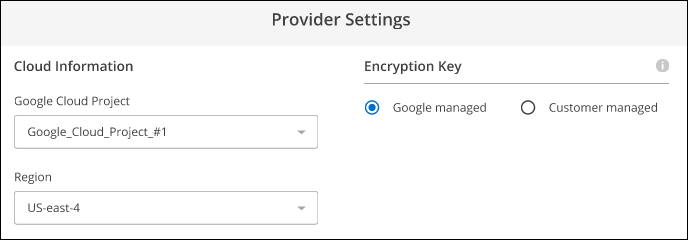
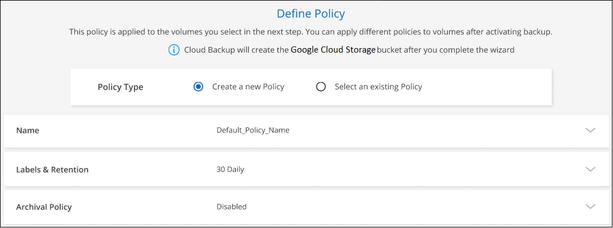
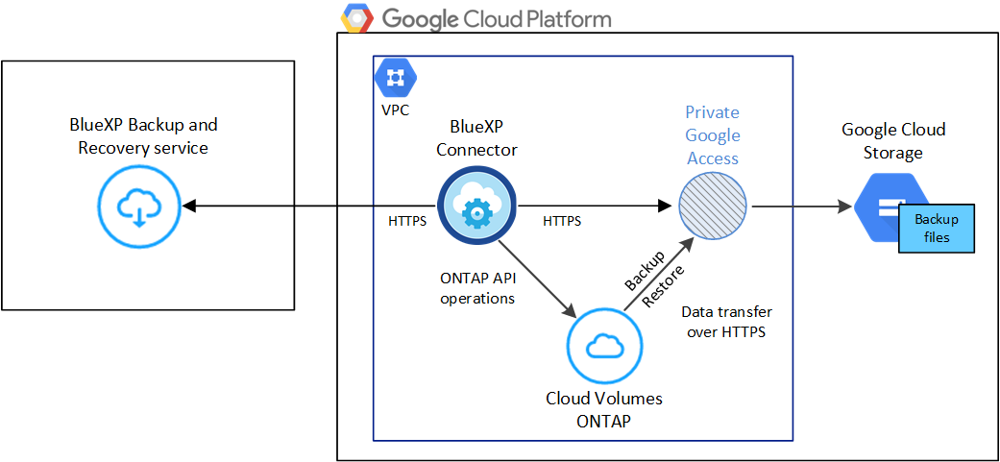
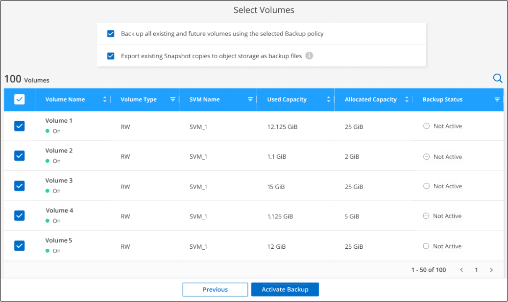

Amazon Web Services
Amazon Web Services
 Google Cloud
Google Cloud
 Microsoft Azure
Microsoft Azure
 Richiedi modifiche alla documentazione
Richiedi modifiche alla documentazione Modifica questa pagina
Modifica questa pagina Scopri come collaborare
Scopri come collaborareBackup dei dati Cloud Volumes ONTAP su Google Cloud Storage
Collaboratori
Completa alcuni passaggi per iniziare a eseguire il backup dei dati dei volumi dai tuoi sistemi Cloud Volumes ONTAP allo storage cloud Google.
Avvio rapido
Inizia subito seguendo questi passaggi o scorri verso il basso fino alle restanti sezioni per ottenere informazioni dettagliate.
 Verificare il supporto per la configurazione
Verificare il supporto per la configurazione-
Stai utilizzando Cloud Volumes ONTAP 9.7P5 o versioni successive in GCP (si consiglia ONTAP 9.8P13 e versioni successive).
-
Si dispone di un abbonamento GCP valido per lo spazio di storage in cui verranno collocati i backup.
-
Nel progetto Google Cloud hai un account di servizio con il ruolo predefinito Storage Admin.
-
Si è abbonati a. "Offerta di backup di BlueXP Marketplace", oppure è stato acquistato "e attivato" Una licenza BYOL di backup e ripristino BlueXP di NetApp.
-
Hai un connettore installato in Google Cloud.
 Abilitare il backup e il ripristino BlueXP sul sistema nuovo o esistente
Abilitare il backup e il ripristino BlueXP sul sistema nuovo o esistente-
Nuovi sistemi: È possibile attivare il backup e il ripristino BlueXP al termine della procedura guidata del nuovo ambiente di lavoro.
-
Sistemi esistenti: Selezionare l’ambiente di lavoro e fare clic su Enable (attiva) accanto al servizio di backup e ripristino nel pannello di destra, quindi seguire la procedura di installazione guidata.

 Inserire i dettagli del provider
Inserire i dettagli del providerSeleziona il progetto Google Cloud e la regione in cui desideri creare il bucket di storage Google Cloud per i backup. È inoltre possibile scegliere le chiavi gestite dal cliente per la crittografia dei dati invece di utilizzare la chiave di crittografia predefinita gestita da Google.

 Definire il criterio di backup predefinito
Definire il criterio di backup predefinitoIl criterio predefinito esegue il backup dei volumi ogni giorno e conserva le 30 copie di backup più recenti di ciascun volume. Passare a backup orari, giornalieri, settimanali, mensili o annuali, in alternativa, selezionare una delle policy definite dal sistema che fornisca più opzioni. È inoltre possibile modificare il numero di copie di backup che si desidera conservare.
Per impostazione predefinita, i backup vengono memorizzati nello storage standard. Se il cluster utilizza ONTAP 9.12.1 o versione successiva, è possibile scegliere di eseguire il tiering dei backup per lo storage di archiviazione dopo un certo numero di giorni per un’ulteriore ottimizzazione dei costi. "Scopri di più sulle impostazioni di configurazione dei criteri di backup e ripristino di BlueXP disponibili".

 Selezionare i volumi di cui si desidera eseguire il backup
Selezionare i volumi di cui si desidera eseguire il backupIdentificare i volumi di cui si desidera eseguire il backup utilizzando il criterio di backup predefinito nella pagina Select Volumes (Seleziona volumi). Se si desidera assegnare criteri di backup diversi a determinati volumi, è possibile creare criteri aggiuntivi e applicarli ai volumi in un secondo momento.
Requisiti
Leggere i seguenti requisiti per assicurarsi di disporre di una configurazione supportata prima di avviare il backup dei volumi sullo storage Google Cloud.
L’immagine seguente mostra ciascun componente e le connessioni che è necessario preparare tra di essi:

- Versioni di ONTAP supportate
-
Minimo di ONTAP 9.7P5; si consiglia ONTAP 9.8P13 e versioni successive.
- Requisiti di licenza
-
Per le licenze PAYGO di backup e ripristino BlueXP, è disponibile un abbonamento BlueXP nel Google Marketplace che consente le implementazioni di backup e ripristino di Cloud Volumes ONTAP e BlueXP. È necessario "Iscriviti a questo abbonamento BlueXP" Prima di attivare il backup e ripristino BlueXP. La fatturazione per il backup e il ripristino BlueXP viene effettuata tramite questo abbonamento. "È possibile iscriversi dalla pagina Dettagli credenziali della procedura guidata dell’ambiente di lavoro".
Per le licenze BYOL di backup e ripristino BlueXP, è necessario il numero di serie di NetApp che consente di utilizzare il servizio per la durata e la capacità della licenza. "Scopri come gestire le tue licenze BYOL".
Inoltre, è necessario disporre di un abbonamento Google per lo spazio di storage in cui verranno collocati i backup.
- Regioni GCP supportate
-
Il backup e ripristino BlueXP è supportato in tutte le regioni GCP "Dove è supportato Cloud Volumes ONTAP".
- Account di servizio GCP
-
Devi disporre di un account di servizio nel tuo progetto Google Cloud con il ruolo predefinito Storage Admin. "Scopri come creare un account di servizio".
- Requisiti del connettore
-
Il connettore deve essere installato in una regione Google con accesso a Internet.
- Verificare o aggiungere le autorizzazioni al connettore
-
Per utilizzare la funzionalità di backup e ripristino di BlueXP, è necessario disporre di autorizzazioni specifiche nel ruolo del connettore in modo che possa accedere al servizio Google Cloud BigQuery. Consultare le autorizzazioni riportate di seguito e seguire la procedura per modificare il criterio.
-
Poll "Console cloud", Accedere alla pagina ruoli.
-
Utilizzando l’elenco a discesa nella parte superiore della pagina, selezionare il progetto o l’organizzazione che contiene il ruolo che si desidera modificare.
-
Fare clic su un ruolo personalizzato.
-
Fare clic su Edit role (Modifica ruolo) per aggiornare le autorizzazioni del ruolo.
-
Fare clic su Add Permissions (Aggiungi autorizzazioni) per aggiungere le seguenti nuove autorizzazioni al ruolo.
bigquery.jobs.get bigquery.jobs.list bigquery.jobs.listAll bigquery.datasets.create bigquery.datasets.get bigquery.jobs.create bigquery.tables.get bigquery.tables.getData bigquery.tables.list bigquery.tables.create -
Fare clic su Update (Aggiorna) per salvare il ruolo modificato.
-
- Informazioni richieste per l’utilizzo delle chiavi di crittografia gestite dal cliente (CMEK)
-
È possibile utilizzare le proprie chiavi gestite dal cliente per la crittografia dei dati invece di utilizzare le chiavi di crittografia predefinite gestite da Google. Sono supportate sia le chiavi cross-region che cross-project, in modo da poter scegliere un progetto per un bucket diverso dal progetto della chiave CMEK. Se stai pensando di utilizzare le tue chiavi gestite dal cliente:
-
Per aggiungere queste informazioni nell’attivazione guidata, è necessario disporre di Key Ring e Key Name (Nome chiave). "Scopri di più sulle chiavi di crittografia gestite dal cliente".
-
È necessario verificare che le autorizzazioni richieste siano incluse nel ruolo del connettore:
cloudkms.cryptoKeys.get cloudkms.cryptoKeys.getIamPolicy cloudkms.cryptoKeys.list cloudkms.cryptoKeys.setIamPolicy cloudkms.keyRings.get cloudkms.keyRings.getIamPolicy cloudkms.keyRings.list cloudkms.keyRings.setIamPolicy -
È necessario verificare che l’API "Cloud Key Management Service (KMS)" di Google sia attivata nel progetto. Vedere "Documentazione di Google Cloud: Abilitazione delle API" per ulteriori informazioni.
-
Considerazioni CMEK:
-
Sono supportate sia le chiavi HSM (hardware-backed) che quelle generate dal software.
-
Sono supportate entrambe le chiavi Cloud KMS appena create o importate.
-
Sono supportate solo le chiavi regionali, le chiavi globali non sono supportate.
-
Attualmente, è supportato solo lo scopo di "crittografia/decrittografia simmetrica".
-
All’agente di servizio associato all’account di storage viene assegnato il ruolo IAM "CryptoKey Encrypter/Decrypter (role/cloudkms.cryptKeyEncrypterDecrypter)" dal backup e ripristino BlueXP.
-
-
Attivazione del backup e ripristino BlueXP su un nuovo sistema
È possibile attivare il backup e il ripristino BlueXP al termine della procedura guidata dell’ambiente di lavoro per creare un nuovo sistema Cloud Volumes ONTAP.
È necessario disporre di un account di servizio già configurato. Se non si seleziona un account di servizio quando si crea il sistema Cloud Volumes ONTAP, è necessario spegnere il sistema e aggiungere l’account di servizio a Cloud Volumes ONTAP dalla console GCP.
Vedere "Avvio di Cloud Volumes ONTAP in GCP" Per i requisiti e i dettagli per la creazione del sistema Cloud Volumes ONTAP.
-
Nella pagina ambienti di lavoro, fare clic su Aggiungi ambiente di lavoro e seguire le istruzioni.
-
Scegli una località: Seleziona Google Cloud Platform.
-
Choose Type (Scegli tipo): Selezionare Cloud Volumes ONTAP (nodo singolo o alta disponibilità).
-
Dettagli e credenziali: Inserire le seguenti informazioni:
-
Fare clic su Edit Project (Modifica progetto) e selezionare un nuovo progetto se quello che si desidera utilizzare è diverso dal progetto predefinito (dove si trova il connettore).
-
Specificare il nome del cluster.
-
Attivare l’opzione account servizio e selezionare l’account servizio con il ruolo di amministratore dello storage predefinito. Questo è necessario per abilitare i backup e il tiering.
-
Specificare le credenziali.
Assicurarsi che sia disponibile un abbonamento a GCP Marketplace.

-
-
Servizi: Lasciare attivato il servizio di backup e ripristino BlueXP e fare clic su continua.

-
Completare le pagine della procedura guidata per implementare il sistema come descritto in "Avvio di Cloud Volumes ONTAP in GCP".
Il backup e ripristino di BlueXP è attivato sul sistema e consente di eseguire il backup del volume creato ogni giorno, conservando le 30 copie di backup più recenti.
Attivazione del backup e ripristino BlueXP su un sistema esistente
È possibile abilitare il backup e il ripristino BlueXP in qualsiasi momento direttamente dall’ambiente di lavoro.
-
Selezionare l’ambiente di lavoro e fare clic su Enable (attiva) accanto al servizio di backup e ripristino nel pannello di destra.
Se la destinazione di Google Cloud Storage per i backup esiste come ambiente di lavoro su Canvas, è possibile trascinare il cluster sull’ambiente di lavoro di Google Cloud Storage per avviare la procedura di installazione guidata.
-
Selezionare i dati del provider e fare clic su Avanti.
-
Il progetto Google Cloud e la regione in cui si desidera creare il bucket di storage Google Cloud per i backup.
-
Sia che tu utilizzi la chiave di crittografia predefinita gestita da Google o scelga le chiavi gestite dal cliente per gestire la crittografia dei dati. Per utilizzare un CMEK, è necessario disporre del Key Ring e del nome della chiave. "Scopri di più sulle chiavi di crittografia gestite dal cliente".
Tenere presente che il progetto deve disporre di un account di servizio con il ruolo di amministratore dello storage predefinito.
-
-
Inserire i dettagli del criterio di backup che verranno utilizzati per il criterio predefinito e fare clic su Avanti. È possibile selezionare una policy esistente o crearne una nuova inserendo le selezioni in ciascuna sezione:
-
Immettere il nome del criterio predefinito. Non è necessario modificare il nome.
-
Definire la pianificazione del backup e scegliere il numero di backup da conservare. "Consulta l’elenco delle policy esistenti che puoi scegliere".
-
Quando si utilizza ONTAP 9.12.1 o superiore, è possibile scegliere di eseguire il tiering dei backup per lo storage di archiviazione dopo un certo numero di giorni per un’ulteriore ottimizzazione dei costi. "Scopri di più sulle impostazioni di configurazione dei criteri di backup e ripristino di BlueXP disponibili".
-
-
Selezionare i volumi di cui si desidera eseguire il backup utilizzando il criterio di backup definito nella pagina Select Volumes (Seleziona volumi). Se si desidera assegnare criteri di backup diversi a determinati volumi, è possibile creare criteri aggiuntivi e applicarli successivamente a tali volumi.
-
Per eseguire il backup di tutti i volumi esistenti ed eventuali volumi aggiunti in futuro, selezionare la casella "Backup di tutti i volumi esistenti e futuri…". Si consiglia di utilizzare questa opzione per eseguire il backup di tutti i volumi e non è necessario ricordarsi di attivare i backup per i nuovi volumi.
-
Per eseguire il backup solo dei volumi esistenti, selezionare la casella nella riga del titolo (
 ).
). -
Per eseguire il backup di singoli volumi, selezionare la casella relativa a ciascun volume (
 ).
).
-
Se in questo ambiente di lavoro sono presenti copie Snapshot locali per volumi di lettura/scrittura che corrispondono all’etichetta della pianificazione di backup appena selezionata per questo ambiente di lavoro (ad esempio, giornaliero, settimanale, ecc.), viene visualizzato un messaggio aggiuntivo "Export existing Snapshot copies to object storage as backup copies" (Esporta copie Snapshot esistenti nello storage a oggetti come copie di backup). Selezionare questa casella se si desidera copiare tutte le istantanee storiche nello storage a oggetti come file di backup per garantire la protezione più completa per i volumi.
-
-
Fare clic su Activate Backup (attiva backup) per avviare il backup e il ripristino di BlueXP con i backup iniziali di ciascun volume selezionato.
Un bucket di Google Cloud Storage viene creato automaticamente nell’account di servizio indicato dalla chiave di accesso e dalla chiave segreta di Google immessi e i file di backup vengono memorizzati in tale account. Viene visualizzata la dashboard di backup del volume, che consente di monitorare lo stato dei backup. È inoltre possibile monitorare lo stato dei processi di backup e ripristino utilizzando "Pannello Job Monitoring (monitoraggio processi)".
Per impostazione predefinita, i backup sono associati alla classe di storage Standard. È possibile utilizzare le classi di storage Nearline, Coldline o Archive a basso costo. Tuttavia, la classe di storage viene configurata tramite Google, non tramite l’interfaccia utente di backup e ripristino di BlueXP. Consulta l’argomento di Google "Modifica della classe di storage predefinita di un bucket" per ulteriori informazioni.
Quali sono le prossime novità?
-
È possibile "gestire i file di backup e le policy di backup". Ciò include l’avvio e l’arresto dei backup, l’eliminazione dei backup, l’aggiunta e la modifica della pianificazione di backup e molto altro ancora.
-
È possibile "gestire le impostazioni di backup a livello di cluster". Ciò include la modifica della larghezza di banda della rete disponibile per caricare i backup nello storage a oggetti, la modifica dell’impostazione di backup automatico per i volumi futuri e molto altro ancora.
-
Puoi anche farlo "ripristinare volumi, cartelle o singoli file da un file di backup" A un sistema Cloud Volumes ONTAP in Google o a un sistema ONTAP on-premise.